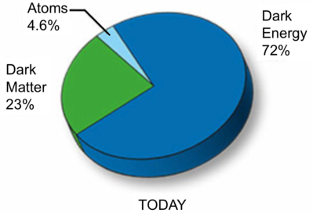

Most of the mass-energy, about 95%, in the universe is ‘dark’. By dark we mean that it does not emit any form of electromagnetic radiation. The existence of Dark Matter is inferred indirectly by its gravitational effect. Observations of the motions of stars and gas in galaxies, cluster galaxy radial velocities, hot gas properties of clusters, and gravitational lensing of distant, background galaxies by foreground galaxy clusters all suggest large amounts of Dark Matter exist. For example the observed radial velocities of cluster galaxies suggest dynamically-based cluster masses that are factors of 10 or more higher than that deduced by adding up the observed cluster mass (stars, gas, dust) content.
Dark Matter makes up 23% of the total mass-energy density of the universe. The dominant contributor is Dark Energy, and a small amount is due to atoms or baryonic matter.

Credit: Swinburne
Comparisons of galaxy cluster and supercluster structure with N-body computational simulations also suggests the need for some sort of Dark Matter. Dark Matter is also needed for gravity to amplify the observed small fluctuations in the Cosmic Microwave Background to form the large-scale structure that we observe today.
Dark Matter candidates are either baryonic or non-baryonic, or a mixture of both. The non-baryonic forms are usually subdivided into two classes – Hot Dark Matter (HDM) and Cold Dark Matter (CDM). HDM requires a particle with near-zero mass (neutrinos are a prime example; axions, or supersymmetric particles are others). The Special Theory of Relativity requires that nearly massless particles move at speeds very close to c, the speed of light. However HDM does not fully account for the large-scale structure of galaxies observed in the universe. Using neutrinos as an example, their highly relativistic velocities would tend to smooth out fluctuations in the matter density as they propagated through the universe. They would be good at forming very large structures like superclusters but not smaller, galaxies.
CDM requires objects sufficiently massive that they move at sub-relativistic velocities. Comparisons between observed large-scale structure and N-body simulations favour CDM to be the major, if not total, component of Dark Matter. A major CDM candidate is WIMPs (Weakly Interacting Massive Particles). The search for these particles involves attempts at direct detection by sensitive detectors and production by particle accelerators.
Several teams are trying to detect WIMPs with ultra-sensitive, deep underground detectors. A collision between a WIMP and an atom would force the WIMP to change direction and slow, whilst the atom recoils. This recoil can be detected in a number of ways. In semiconductors and some liquids and gases, an ionisation charge released by the recoiling atom can be measured.
Much work has been done to determine if any baryonic matter was unaccounted for in the universe. MACHOs (Massive Compact Halo Objects) are Dark Matter candidates consisting of condensed objects such as black holes, neutron stars, white dwarfs, very faint stars, or non-luminous objects like planets. The search for these consists of using gravitational microlensing to see the effect of these objects in our Galaxy on background stars. There are many continuing observing programs doing this work. The MACHO project at Mt. Stromlo Observatory observed star fields in our Galaxy and towards the Large Magellanic Cloud. In summary whilst they did detect microlensing events the number of events was not enough to suggest that a MACHO population of dark objects between 0.1 – 0.9 M⊙ could add more than 20% to the known mass discrepancy in the Galaxy halo. If there is a baryonic component to Dark Matter it appears to be quite small. This result is supported by other microlensing programs such as OGLE and EROS.
The decay products of WIMPs may be detected by the Large Hadron Collider (LHC). The LHC is not expected to detect WIMPs but could detect their decay product(s), called SuperWIMPs. Interestingly astronomy, not particle physics, may be able to solve its own ‘mass problem’. Dark Matter particles, in some models, can annihilate and produce a slew of secondary particles. Two WIMPs, each with a mass of between 50 – 200 GeV can annihilate and produce two Gamma ray photons, the energy of each equalling the mass of one WIMP. Gamma ray telescopes, like Fermi Gamma ray Space Telescope, are observing the Galactic center (where the highest density of nearby Dark Matter should exist) and are searching for specific Gamma ray energy signatures.
Alternatives to Dark Matter do exist. A variation of gravity, MOND (MOdified Newtonian Dynamics) claims to explain many of the observational signatures listed above. In MOND it is suggested that for extremely low gravitational acceleration Newton’s law for gravitational force may break down. MOND suggests that acceleration is not linearly proportional to force at low values.